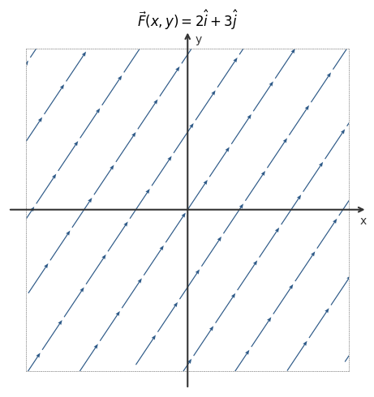
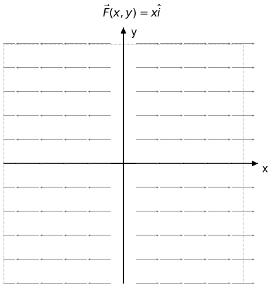
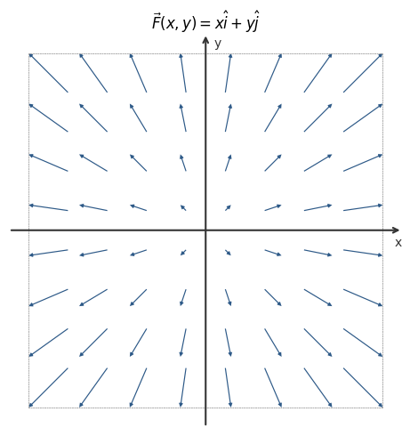
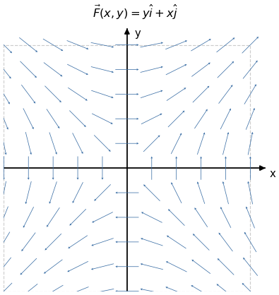

第十二章: 曲线积分和曲面积分
本章综合运用多元函数微积分, 解决物理中的核心问题: 力沿路径做的功, 流体穿过曲面的通量, 以及将它们联系起来的三大积分定理 (格林, 高斯, 斯托克斯). 每一个定理都是微积分基本定理在更高维度的推广.
12.1 场与向量场
自然界中许多物理量随空间位置变化: 温度在房间各处不同, 风速在每个地点有大小和方向, 引力场在不同位置指向不同的方向. 数学上, 我们用场来描述这类”空间中每个点都对应一个量”的结构.
设 D \subset \mathbb{R}^n 为一区域.
- 标量场 (scalar field): D 上的实值函数 f: D \to \mathbb{R}, 每个点对应一个数. 例: 温度场, 密度场, 电势场.
- 向量场 (vector field): D 上的向量值函数 \mathbf{F}: D \to \mathbb{R}^n, 每个点对应一个向量. 例: 引力场, 流速场, 电 (力) 场.
向量场的分量形式:
\mathbf{F}(x,y) = P(x,y)\,\hat{\mathbf{i}} + Q(x,y)\,\hat{\mathbf{j}} \qquad \text{（二维）}
\mathbf{F}(x,y,z) = P(x,y,z)\,\hat{\mathbf{i}} + Q(x,y,z)\,\hat{\mathbf{j}} + R(x,y,z)\,\hat{\mathbf{k}} \qquad \text{（三维）}
其中 P, Q, R 是普通的多元函数, 分别表示向量在 x, y, z 方向的分量.
==例 1== \mathbf{F}(x,y) = 2\hat{\mathbf{i}} + 3\hat{\mathbf{j}} — 均匀场, 每处方向和大小相同.

==例 2== \mathbf{F}(x,y) = x\hat{\mathbf{i}} — 水平分量随 x 增大, 无竖直分量.

==例 3== \mathbf{F}(x,y) = x\hat{\mathbf{i}} + y\hat{\mathbf{j}} — 从原点向外辐射的源场.

==例 4== \mathbf{F}(x,y) = y\hat{\mathbf{i}} + x\hat{\mathbf{j}} — 场线呈双曲线形.

三维向量场的结构更为丰富. 下面是两个典型例子, 可拖动旋转查看: 左图为螺旋场 \mathbf{F}=(-z,\tfrac{1}{2},x), 右图为磁偶极子场.
本章的核心问题是: 如何在向量场中进行积分?
12.2 第一类曲线积分
一段细线弯曲成平面曲线 L 的形状, 其线密度 (单位长度的质量) 在不同位置不同, 记为 \rho(x,y). 如何计算这段细线的总质量?
将 L 分成 N 小段, 第 i 段的弧长为 \Delta s_i, 取该段上任一点 (x_i, y_i), 则该段质量约为 \rho(x_i, y_i)\,\Delta s_i. 对所有小段求和并令 N\to\infty, 即得细线总质量:
M = \lim_{\lambda\to 0}\sum_{i=1}^{N}\rho(x_i,y_i)\,\Delta s_i,
其中 \lambda = \max_i \Delta s_i 为最大小段弧长.
这个极限就是第一类曲线积分 (或弧长曲线积分) 的定义.
设 f(x,y) 在曲线 L 上连续. 将 L 划分为 N 段弧, 第 i 段弧长为 \Delta s_i, 在该段上取任一点 (x_i,y_i), 令 \lambda = \max_i \Delta s_i. 若极限
\lim_{\lambda\to 0}\sum_{i=1}^{N}f(x_i,y_i)\,\Delta s_i
存在且与划分方式及取点无关, 则称该极限为 f 沿 L 的第一类曲线积分, 记作
\int_L f(x,y)\,\mathrm{d}s = \lim_{\lambda\to 0}\sum_{i=1}^{N}f(x_i,y_i)\,\Delta s_i,
\mathrm{d}s 称为弧长微元.
若 L 由参数方程 x=x(t),\,y=y(t),\,t\in[t_0,t_1] 给出, t_0 < t_1, x'(t),y'(t) 在 [t_0,t_1] 上连续, 且对所有 t\in[t_0,t_1] 均有 [x'(t)]^2+[y'(t)]^2\neq 0, 则弧长微元为
\mathrm{d}s = \sqrt{[x'(t)]^2+[y'(t)]^2}\,\mathrm{d}t,
从而
\int_L f(x,y)\,\mathrm{d}s = \int_{t_0}^{t_1}f\bigl(x(t),y(t)\bigr)\sqrt{[x'(t)]^2+[y'(t)]^2}\,\mathrm{d}t.
对空间曲线 L: x=x(t),\,y=y(t),\,z=z(t),\,t\in[t_0,t_1], 弧长微元为
\mathrm{d}s = \sqrt{[x'(t)]^2+[y'(t)]^2+[z'(t)]^2}\,\mathrm{d}t,
积分公式形式相同: \displaystyle\int_L f(x,y,z)\,\mathrm{d}s = \int_{t_0}^{t_1}f(x(t),y(t),z(t))\sqrt{[x'(t)]^2+[y'(t)]^2+[z'(t)]^2}\,\mathrm{d}t.
第一类曲线积分有两个重要性质:
- 与方向无关: 将 L 反向, \mathrm{d}s 始终为正, 积分值不变.
- 对路径可加: \int_{L_1+L_2}f\,\mathrm{d}s = \int_{L_1}f\,\mathrm{d}s + \int_{L_2}f\,\mathrm{d}s.
计算 \displaystyle\int_L(x^2+y^2)\,\mathrm{d}s，其中 L 为圆 x=\cos t,\,y=\sin t,\,t\in[0,2\pi]。
在单位圆 L 上，x^2+y^2=1，弧长微元 \mathrm{d}s = \sqrt{x'^2+y'^2}\,\mathrm{d}t = \mathrm{d}t。
\mathrm{d}s = \sqrt{\sin^2 t+\cos^2 t}\,\mathrm{d}t = \mathrm{d}t，且在 L 上 x^2+y^2=1，故
\int_L(x^2+y^2)\,\mathrm{d}s = \int_0^{2\pi}1\cdot\mathrm{d}t = 2\pi.
计算曲线积分
\int_L \sqrt{y}\,\mathrm{d}s,
其中 L 是抛物线 y = x^2 上从点 O(0,0) 到点 B(1,1) 之间的一段弧。
将 L 表示为 y = x^2（0 \leq x \leq 1），则 \mathrm{d}s = \sqrt{1+(y')^2}\,\mathrm{d}x = \sqrt{1+4x^2}\,\mathrm{d}x，代入积分后用换元法。
\int_L \sqrt{y}\,\mathrm{d}s = \int_0^1 \sqrt{x^2}\sqrt{1+\left(\frac{\mathrm{d}y}{\mathrm{d}x}\right)^2}\,\mathrm{d}x = \int_0^1 x\sqrt{1+4x^2}\,\mathrm{d}x.
令 u = 1+4x^2，\mathrm{d}u = 8x\,\mathrm{d}x：
= \left[\frac{1}{12}(1+4x^2)^{3/2}\right]_0^1 = \frac{1}{12}(5\sqrt{5} - 1).
计算曲线积分 \displaystyle\int_\Gamma (x^2+y^2+z^2)\,\mathrm{d}s，其中 \Gamma 为螺旋线 x = a\cos t，y = a\sin t，z = kt，t 从 0 到 2\pi 的一段弧。
将参数代入并计算弧长元素 \mathrm{d}s = \sqrt{x'^2+y'^2+z'^2}\,\mathrm{d}t = \sqrt{a^2+k^2}\,\mathrm{d}t，注意 x^2+y^2+z^2 = a^2+k^2t^2。
弧长元素：
\mathrm{d}s = \sqrt{(-a\sin t)^2 + (a\cos t)^2 + k^2}\,\mathrm{d}t = \sqrt{a^2+k^2}\,\mathrm{d}t.
被积函数：x^2+y^2+z^2 = a^2\cos^2 t + a^2\sin^2 t + k^2 t^2 = a^2 + k^2 t^2。
\int_\Gamma (x^2+y^2+z^2)\,\mathrm{d}s = \sqrt{a^2+k^2}\int_0^{2\pi}(a^2+k^2t^2)\,\mathrm{d}t = \sqrt{a^2+k^2}\left[a^2 t + \frac{k^2 t^3}{3}\right]_0^{2\pi} = \frac{2\pi\sqrt{a^2+k^2}}{3}(3a^2 + 4\pi^2 k^2).
12.3 第二类曲线积分
质点在向量场 \mathbf{F}(x,y) = P(x,y)\hat{\mathbf{i}}+Q(x,y)\hat{\mathbf{j}} 的作用下沿有向曲线 L 运动. 如何计算场对质点所做的总功?
将路径分为 N 小段, 第 i 段的位移向量为 \Delta\mathbf{r}_i = (\Delta x_i, \Delta y_i)^T, 该段上的力约为 \mathbf{F}(x_i,y_i). 做功约为 \mathbf{F}(x_i,y_i)\cdot\Delta\mathbf{r}_i = P_i\Delta x_i + Q_i\Delta y_i. 令 \lambda = \max_i|\Delta\mathbf{r}_i| 并取极限:
W = \lim_{\lambda\to 0}\sum_{i=1}^{N}\bigl(P(x_i,y_i)\Delta x_i + Q(x_i,y_i)\Delta y_i\bigr).
设向量场 \mathbf{F}(x,y)=P(x,y)\hat{\mathbf{i}}+Q(x,y)\hat{\mathbf{j}} 在有向曲线 L 上连续. 若上述极限存在且与划分及取点无关, 则称该极限为 \mathbf{F} 沿 L 的第二类曲线积分 (或向量场曲线积分), 记作
\int_L \mathbf{F}\cdot\mathrm{d}\mathbf{r} = \int_L P(x,y)\,\mathrm{d}x + Q(x,y)\,\mathrm{d}y,
其中 \mathrm{d}\mathbf{r} = \mathrm{d}x\,\hat{\mathbf{i}}+\mathrm{d}y\,\hat{\mathbf{j}} 为有向弧元.
第二类曲线积分与曲线的方向有关: 若 -L 表示 L 的反向, 则
\int_{-L}\mathbf{F}\cdot\mathrm{d}\mathbf{r} = -\int_L\mathbf{F}\cdot\mathrm{d}\mathbf{r}.
物理直觉: 逆着力的方向运动, 场做负功. 这与第一类积分不同 (第一类积分的弧长 \mathrm{d}s > 0 与方向无关).
若 L: x=x(t),\,y=y(t), t 从 t_1 到 t_2 (t_1 对应起点, t_2 对应终点), 则 \mathrm{d}x=x'(t)\,\mathrm{d}t,\,\mathrm{d}y=y'(t)\,\mathrm{d}t, 故
\int_L P\,\mathrm{d}x+Q\,\mathrm{d}y = \int_{t_1}^{t_2}\bigl[P(x(t),y(t))\,x'(t)+Q(x(t),y(t))\,y'(t)\bigr]\mathrm{d}t.
注意: t_1 到 t_2 的积分方向与曲线的定向一致; 若反向, 则交换 t_1, t_2, 积分变号.
设 \boldsymbol{\tau} 为 L 的单位切向量 (与定向一致), 则 \mathrm{d}\mathbf{r} = \boldsymbol{\tau}\,\mathrm{d}s, 从而
\int_L\mathbf{F}\cdot\mathrm{d}\mathbf{r} = \int_L\mathbf{F}\cdot\boldsymbol{\tau}\,\mathrm{d}s.
即第二类曲线积分是以 \mathbf{F}\cdot\boldsymbol{\tau} (场沿切向的分量) 为被积函数的第一类积分. 两类积分本质上是同一件事: 前者强调向量的分量, 后者强调弧长方向.
计算 \displaystyle\int_L y\,\mathrm{d}x - x\,\mathrm{d}y，其中 L 为从 (1,0) 到 (-1,0) 的上半圆 x=\cos t,\,y=\sin t,\,t\in[0,\pi]。
将 x=\cos t,\,y=\sin t 代入，计算 \mathrm{d}x=-\sin t\,\mathrm{d}t,\,\mathrm{d}y=\cos t\,\mathrm{d}t，再代入被积表达式。
\int_L y\,\mathrm{d}x-x\,\mathrm{d}y = \int_0^{\pi}\bigl(\sin t\cdot(-\sin t)-\cos t\cdot\cos t\bigr)\mathrm{d}t = \int_0^{\pi}(-1)\,\mathrm{d}t = -\pi.
计算 \displaystyle W = \int_L \vec{F}\cdot\mathrm{d}\vec{r}，其中 \vec{F} = -y\hat{i} + x\hat{j}，曲线 L 由参数方程 x = t，y = t^2，t \in [0,1] 给出。
将 P = -y，Q = x 和曲线参数化代入公式 W = \int P\,\mathrm{d}x + Q\,\mathrm{d}y，化为对 t 的定积分。
\mathrm{d}x = \mathrm{d}t，\mathrm{d}y = 2t\,\mathrm{d}t。
W = \int_L -y\,\mathrm{d}x + x\,\mathrm{d}y = \int_0^1 \left(-t^2 \cdot 1 + t \cdot 2t\right)\mathrm{d}t = \int_0^1 t^2\,\mathrm{d}t = \frac{1}{3}.
计算 \displaystyle\int_L xy\,\mathrm{d}x，其中 L 为抛物线 y^2 = x 上从点 A(1,-1) 到点 B(1,1) 的一段弧。
分拆路径为 AO（y 从 -1 到 0）和 OB（y 从 0 到 1），或直接用 y 参数化整条弧：x = y^2，\mathrm{d}x = 2y\,\mathrm{d}y，y \in [-1,1]。
解法一（分拆路径）：
\int_L xy\,\mathrm{d}x = \int_{AO} xy\,\mathrm{d}x + \int_{OB} xy\,\mathrm{d}x = \int_1^0 x(-\sqrt{x})\,\mathrm{d}x + \int_0^1 x\sqrt{x}\,\mathrm{d}x = 2\int_0^1 x^{3/2}\,\mathrm{d}x = \frac{4}{5}.
解法二（y 参数化）：
x = y^2，\mathrm{d}x = 2y\,\mathrm{d}y，y \in [-1,1]：
\int_L xy\,\mathrm{d}x = \int_{-1}^1 y^2 \cdot y \cdot 2y\,\mathrm{d}y = 2\int_{-1}^1 y^4\,\mathrm{d}y = 4\int_0^1 y^4\,\mathrm{d}y = \frac{4}{5}.
一个质点在点 M(x,y) 处受到力 \vec{F} 的作用，\vec{F} 的大小与点 M 到原点 O 的距离成正比，方向恒指向原点。质点由 A(a,0) 沿椭圆 \dfrac{x^2}{a^2}+\dfrac{y^2}{b^2}=1 按逆时针方向移动到 B(0,b)，求力 \vec{F} 所做的功 W。
力的表达式为 \vec{F} = -k(x\hat{i}+y\hat{j})（k>0）。用椭圆参数方程 x = a\cos\theta，y = b\sin\theta，\theta \in [0, \pi/2]，代入做功积分。
\vec{F} = -k(x\hat{i} + y\hat{j}), \quad W = -k\int_{AB}(x\,\mathrm{d}x + y\,\mathrm{d}y).
参数化：\mathrm{d}x = -a\sin\theta\,\mathrm{d}\theta，\mathrm{d}y = b\cos\theta\,\mathrm{d}\theta，\theta: 0 \to \pi/2：
W = -k\int_0^{\pi/2}\bigl[a\cos\theta(-a\sin\theta) + b\sin\theta(b\cos\theta)\bigr]\mathrm{d}\theta = k(a^2-b^2)\int_0^{\pi/2}\sin\theta\cos\theta\,\mathrm{d}\theta.
W = k(a^2-b^2)\cdot\frac{1}{2}\int_0^{\pi/2}\sin 2\theta\,\mathrm{d}\theta = k(a^2-b^2)\cdot\frac{1}{2}\left[-\frac{\cos 2\theta}{2}\right]_0^{\pi/2} = \frac{k(a^2-b^2)}{2}.
已知 \vec{F} = x\hat{i}+y\hat{j}，求 W = \displaystyle\int_L \vec{F}\cdot\mathrm{d}\vec{r}，其中 L 是任意闭合曲线（如图所示）。
\vec{F} = \nabla f 其中 f = \frac{1}{2}(x^2+y^2)，保守场沿闭合曲线的积分为零。
由于 \vec{F} = x\hat{i}+y\hat{j} = \nabla\left(\dfrac{x^2+y^2}{2}\right) 是一个梯度场（保守场），
W = \oint_L \vec{F}\cdot\mathrm{d}\vec{r} = 0.
计算 \displaystyle\int_L y^2\,\mathrm{d}x，其中 L 为：
- 半径为 a、圆心在原点、按逆时针方向绕行的上半圆周。
- 从点 A(a,0) 沿 x 轴到点 B(-a,0) 的直线段。
- 上半圆参数化 x = a\cos\theta，y = a\sin\theta，\theta: 0 \to \pi；(2) 直线段上 y=0，被积函数为零。
(1) 上半圆周：
\int_L y^2\,\mathrm{d}x = \int_0^\pi a^2\sin^2\theta \cdot (-a\sin\theta)\,\mathrm{d}\theta = -a^3\int_0^\pi(1-\cos^2\theta)\,\mathrm{d}\cos\theta.
令 u = \cos\theta，u: 1 \to -1：
= -a^3\int_1^{-1}(1-u^2)\,\mathrm{d}u = a^3\int_{-1}^1(1-u^2)\,\mathrm{d}u = a^3\left[2 - \frac{2}{3}\right] = -\frac{4}{3}a^3.
（注意原始积分含负号）
(2) 直线段 y=0：
\int_L y^2\,\mathrm{d}x = \int_a^{-a} 0\,\mathrm{d}x = 0.
两条路径结果不同，说明积分路径相关。
计算 \displaystyle\int_L 2xy\,\mathrm{d}x + x^2\,\mathrm{d}y，其中 L 为：
- 抛物线 y = x^2 上从 O(0,0) 到 B(1,1) 的一段弧。
- 抛物线 x = y^2 上从 O(0,0) 到 B(1,1) 的一段弧。
- 有向折线 O(0,0) \to A(1,0) \to B(1,1)。
注意 P = 2xy，Q = x^2，有 \frac{\partial Q}{\partial x} = 2x = \frac{\partial P}{\partial y}，故积分路径无关，三条路径结果相同。可用任意一条计算。
路径 (1)（y = x^2，x \in [0,1]）：
\int_L 2xy\,\mathrm{d}x+x^2\,\mathrm{d}y = \int_0^1\left(2x\cdot x^2 + x^2\cdot 2x\right)\mathrm{d}x = \int_0^1 \left(2x^{\frac{3}{2}+1} + \frac{1}{2}x^{\frac{3}{2}}\right)\mathrm{d}x.
更直接地：\mathrm{d}y = 2x\,\mathrm{d}x，
= \int_0^1(2x^3 + 2x^3)\,\mathrm{d}x = \ldots
令 y=x^2，则 dy = 2x\,dx：
= \int_0^1\left(2x\cdot x^2 + x^2 \cdot 2x\right)\mathrm{d}x = \int_0^1 4x^3\,\mathrm{d}x.
但最简单的方式：P\,dx+Q\,dy = d(x^2 y)（因为 Q = x^2 是 P\,dx + Q\,dy 的势函数 f = x^2 y 的全微分），
\int_O^B d(x^2 y) = \left[x^2 y\right]_{(0,0)}^{(1,1)} = 1.
结论：三条路径的积分值均为 1，积分路径无关。
12.4 格林公式与保守场
12.4.1 格林公式
流体在平面区域 D 内流动, 速度场为 \mathbf{F}=(P,Q). 沿 D 的边界 C (逆时针方向) 一圈的环量 \displaystyle\oint_C\mathbf{F}\cdot\mathrm{d}\mathbf{r} 是否能用 D 内部每一点的”局部旋转”信息来计算?
为刻画向量场在一点的旋转倾向, 引入旋度:
设 \mathbf{F}=(P,Q) 在区域 D 上有连续偏导数, 称
\operatorname{curl}\mathbf{F} = \frac{\partial Q}{\partial x} - \frac{\partial P}{\partial y}
为 \mathbf{F} 的旋度 (二维). \operatorname{curl}\mathbf{F}>0 表示该点邻域内流体逆时针旋转, <0 表示顺时针旋转, =0 表示无旋.
格林公式将区域内所有点的旋度”积累”起来, 得到边界上的环量:
设 D 为平面上由分段光滑曲线围成的有界闭区域, P(x,y) 和 Q(x,y) 在 D 上有一阶连续偏导数, C = \partial D^+ 表示 D 的正向 (逆时针) 边界, 则
\oint_{C} P\,\mathrm{d}x + Q\,\mathrm{d}y = \iint_{D}\left(\frac{\partial Q}{\partial x}-\frac{\partial P}{\partial y}\right)\mathrm{d}A.
只需分别证明:
\oint_C P\,\mathrm{d}x = -\iint_D P_y\,\mathrm{d}A, \qquad \oint_C Q\,\mathrm{d}y = \iint_D Q_x\,\mathrm{d}A. \tag{$*$}
两式对称, 只证第一式.
第一步: 竖直简单区域. 设 D: a\leq x\leq b, f_1(x)\leq y\leq f_2(x), 正向边界由底弧 C_1 (y=f_1, 从左到右), 顶弧 C_3 (y=f_2, 从右到左) 及两侧竖直边 (若有) 组成. 在竖直边上 \mathrm{d}x=0, 故其贡献为零.
\oint_C P\,\mathrm{d}x = \int_a^b P(x,f_1(x))\,\mathrm{d}x - \int_a^b P(x,f_2(x))\,\mathrm{d}x = -\int_a^b\bigl[P(x,f_2(x))-P(x,f_1(x))\bigr]\mathrm{d}x.
另一方面, 由单变量 FTC 对 y 积分:
-\iint_D P_y\,\mathrm{d}A = -\int_a^b\int_{f_1(x)}^{f_2(x)}\frac{\partial P}{\partial y}\,\mathrm{d}y\,\mathrm{d}x = -\int_a^b\bigl[P(x,f_2(x))-P(x,f_1(x))\bigr]\mathrm{d}x.
两式相等, 第一式对竖直简单区域得证.
第二步: 一般区域. 将 D 用一条竖直线段分成两个竖直简单子区域 D_1, D_2, 对每个子区域应用第一步. 内部公共边界的贡献方向相反而相消: \int_\ell P\,\mathrm{d}x + \int_{-\ell} P\,\mathrm{d}x = 0. 两部分相加即得 D 上的结论. 对 (*) 的第二式类似处理, 两式相加即得格林公式. \blacksquare
取 P=-y,\,Q=x, 则 Q_x-P_y=1+1=2, 格林公式给出
A = \iint_D\mathrm{d}A = \frac{1}{2}\oint_C x\,\mathrm{d}y - y\,\mathrm{d}x.
这是仅用边界曲线参数方程就能计算区域面积的公式.
设 \vec{F} = -y\hat{i}+x\hat{j}，利用格林公式计算 \oint_C \vec{F}\cdot\mathrm{d}\vec{r}，其中 C 是某封闭区域 D 的正向边界。
计算 \mathrm{curl}\,\vec{F} = Q_x - P_y，然后用格林公式将曲线积分化为面积分。
\mathrm{curl}\,\vec{F} = \frac{\partial x}{\partial x} - \frac{\partial(-y)}{\partial y} = 1 + 1 = 2.
由格林公式：
\oint_C -y\,\mathrm{d}x + x\,\mathrm{d}y = \iint_D 2\,\mathrm{d}A = 2\,\mathrm{Area}(D).
计算 \displaystyle\oint_L x^2 y\,\mathrm{d}x - xy^2\,\mathrm{d}y，其中 L 为正向圆周 x^2+y^2 = a^2。
令 P = x^2 y，Q = -xy^2，计算 Q_x - P_y，用格林公式化为圆盘上的二重积分，再换极坐标。
\frac{\partial Q}{\partial x} - \frac{\partial P}{\partial y} = -y^2 - x^2 = -(x^2+y^2).
由格林公式，设 D 为圆盘 x^2+y^2\leq a^2：
\oint_L x^2 y\,\mathrm{d}x - xy^2\,\mathrm{d}y = -\iint_D(x^2+y^2)\,\mathrm{d}x\,\mathrm{d}y.
换极坐标：
= -\int_0^{2\pi}\!\mathrm{d}\theta\int_0^a \rho^3\,\mathrm{d}\rho = -2\pi\cdot\frac{a^4}{4} = -\frac{\pi a^4}{2}.
计算 \displaystyle\oint_L \frac{x\,\mathrm{d}y - y\,\mathrm{d}x}{x^2+y^2}，其中 L 为一条无重点、分段光滑且不经过原点的连续闭曲线，L 方向为逆时针。
令 P = \frac{-y}{x^2+y^2}，Q = \frac{x}{x^2+y^2}，验证 P_y = Q_x（在 x^2+y^2\neq 0 时）。分两种情形：原点在曲线围成区域内与否。当原点在区域内时，挖去小圆 l: x^2+y^2=r^2，在复连通区域上用格林公式。
令 P = \dfrac{-y}{x^2+y^2}，Q = \dfrac{x}{x^2+y^2}。当 x^2+y^2\neq 0 时：
Q_x = \frac{y^2-x^2}{(x^2+y^2)^2} = P_y.
情形 (1)：原点不在 L 围成的区域 D 内。
由格林公式：
\oint_L \frac{x\,\mathrm{d}y-y\,\mathrm{d}x}{x^2+y^2} = 0.
情形 (2)：原点在 D 内。
取小圆 l: x^2+y^2=r^2（r 足够小，位于 D 内），对 L 和 l 围成的复连通区域 D_1 用格林公式（两条边界均逆时针）：
\oint_L \frac{x\,\mathrm{d}y-y\,\mathrm{d}x}{x^2+y^2} - \oint_l \frac{x\,\mathrm{d}y-y\,\mathrm{d}x}{x^2+y^2} = 0.
在 l 上参数化 x = r\cos\theta，y = r\sin\theta，\theta: 0\to 2\pi：
\oint_l \frac{x\,\mathrm{d}y-y\,\mathrm{d}x}{x^2+y^2} = \int_0^{2\pi}\frac{r^2(\cos^2\theta+\sin^2\theta)}{r^2}\,\mathrm{d}\theta = 2\pi.
故
\oint_L \frac{x\,\mathrm{d}y-y\,\mathrm{d}x}{x^2+y^2} = 2\pi.
利用格林公式，证明平面区域 D 的面积可表示为
\mathrm{Area}(D) = \oint_C x\,\mathrm{d}y,
其中 C 是 D 的正向边界。
取 P = 0，Q = x，计算 Q_x - P_y，直接用格林公式。
令 P = 0，Q = x，则 Q_x - P_y = 1 - 0 = 1。
由格林公式：
\oint_C x\,\mathrm{d}y = \iint_D 1\,\mathrm{d}A = \mathrm{Area}(D). \qquad \square
12.4.2 保守场与曲线积分基本定理
对于同一起点 A, 终点 B, 力场 \mathbf{F} 沿不同路径所做的功是否相同? 引力场是保守的——无论绕多远, 做功只取决于位移; 摩擦力是非保守的——路径越长, 克服摩擦做的负功越大. 决定这一区别的关键是什么?
设 \mathbf{F}=P\hat{\mathbf{i}}+Q\hat{\mathbf{j}} 在区域 D 上连续. 若存在可微函数 f(x,y), 使得
\mathbf{F} = \nabla f = \frac{\partial f}{\partial x}\hat{\mathbf{i}}+\frac{\partial f}{\partial y}\hat{\mathbf{j}},
则称 \mathbf{F} 为 D 上的保守场 (conservative field, 亦称梯度场), f 称为 \mathbf{F} 的势函数 (potential function).
若 \mathbf{F}=\nabla f 在包含有向曲线 L 的区域上连续可微, L 从点 A 到点 B, 则
\int_L\mathbf{F}\cdot\mathrm{d}\mathbf{r} = f(B) - f(A).
证明: 设 L: \mathbf{r}(t)=(x(t),y(t)), t\in[t_0,t_1], \mathbf{r}(t_0)=A, \mathbf{r}(t_1)=B, 则
\int_L\mathbf{F}\cdot\mathrm{d}\mathbf{r} = \int_{t_0}^{t_1}\!\!\left(\frac{\partial f}{\partial x}x'(t)+\frac{\partial f}{\partial y}y'(t)\right)\mathrm{d}t = \int_{t_0}^{t_1}\frac{\mathrm{d}}{\mathrm{d}t}f(x(t),y(t))\,\mathrm{d}t = f(B)-f(A). \quad\blacksquare
这是一元微积分基本定理 \int_a^b f'(x)\,\mathrm{d}x=f(b)-f(a) 的直接推广: “对梯度的曲线积分只取决于边界”.
在单连通区域 D (无”洞”的区域) 上, 以下四个条件等价:
- \mathbf{F} 是保守场 (存在势函数 f);
- 曲线积分与路径无关: 对 D 中任意 A,B, 积分值与连接 A,B 的路径无关;
- 对 D 内任意封闭曲线 C, \oint_C\mathbf{F}\cdot\mathrm{d}\mathbf{r}=0;
- \operatorname{curl}\mathbf{F} = \dfrac{\partial Q}{\partial x}-\dfrac{\partial P}{\partial y} = 0.
条件 4 的必要性: 若 f 存在, 则 P=f_x,\,Q=f_y, 由混合偏导连续性得 P_y=f_{xy}=f_{yx}=Q_x, 即 \operatorname{curl}\mathbf{F}=0.
注: 条件 4 的充分性依赖单连通性. 在非单连通区域 (如去掉原点的平面 \mathbb{R}^2\setminus\{(0,0)\}) 中, \operatorname{curl}\mathbf{F}=0 不能保证 \mathbf{F} 是保守场 (经典反例: \mathbf{F}=\dfrac{(-y,\,x)}{x^2+y^2}).
已知 \mathbf{F}=(P,Q) 满足 \operatorname{curl}\mathbf{F}=0, 求 f(x,y).
对 x 积分: f(x,y)=\displaystyle\int P(x,y)\,\mathrm{d}x + g(y), 其中 g(y) 为待定函数. 再由 f_y=Q 确定 g'(y), 积分得 g(y).
验证 \mathbf{F}=(2xy+1,\,x^2-1) 是保守场，并求满足 f(0,0)=0 的势函数 f。
先验证 \partial Q/\partial x = \partial P/\partial y，再对 P 关于 x 积分，利用 f_y=Q 确定待定函数 g(y)。
P_y=2x=Q_x，故 \operatorname{curl}\mathbf{F}=0，\mathbf{F} 是保守场。
对 x 积分：f=\displaystyle\int(2xy+1)\,\mathrm{d}x+g(y)=x^2y+x+g(y)。
由 f_y=x^2+g'(y)=x^2-1，得 g'(y)=-1，故 g(y)=-y+c。
代入 f(0,0)=0：c=0，从而 f(x,y)=x^2y+x-y。
判断以下向量场是否为梯度场（保守场）：
- \vec{F} = \langle y^2, 0\rangle
- \vec{F} = \langle 2xy, x^2\rangle
- \vec{F} = \langle y, x\rangle
对于 \vec{F} = \langle P, Q\rangle，是梯度场的充要条件为 \dfrac{\partial P}{\partial y} = \dfrac{\partial Q}{\partial x}。
(1) P = y^2，Q = 0：
P_y = 2y \neq Q_x = 0.
不是梯度场。
(2) P = 2xy，Q = x^2：
P_y = 2x = Q_x = 2x. \quad \checkmark
是梯度场（势函数 f = x^2 y）。
(3) P = y，Q = x：
P_y = 1 = Q_x = 1. \quad \checkmark
是梯度场（势函数 f = xy）。
12.5 曲面积分
至此, 二维的积分理论已经完整: 沿曲线积分 (第一类, 第二类) 以及将区域内部与边界联系起来的格林公式. 现在将同样的思路推广到三维空间: 曲面取代曲线, 通量取代做功.
流体以速度场 \mathbf{F}(x,y,z)=P\hat{\mathbf{i}}+Q\hat{\mathbf{j}}+R\hat{\mathbf{k}} 流动, 空间中有一有向曲面 S. 单位时间内穿过 S 的流体体积 (通量) 是多少?
将 S 分成 N 个小面片, 第 i 片的面积为 \Delta S_i, 外法向单位向量为 \mathbf{n}_i. 穿过该小片的流量约为 \mathbf{F}(x_i,y_i,z_i)\cdot\mathbf{n}_i\,\Delta S_i. 令各小片面积最大值 \to 0, 取极限即得通量.
设 \mathbf{F}=P\hat{\mathbf{i}}+Q\hat{\mathbf{j}}+R\hat{\mathbf{k}} 在有向曲面 S 上连续, \mathbf{n} 为 S 的单位法向量, 则 \mathbf{F} 穿过 S 的通量定义为
\iint_S\mathbf{F}\cdot\mathbf{n}\,\mathrm{d}S = \iint_S\mathbf{F}\cdot\mathrm{d}\mathbf{S}.
设 S 由 z=g(x,y), (x,y)\in D_{xy} 给出, 取朝上法向量. 曲面上的切向量为
\mathbf{v}_1=(1,\,0,\,g_x), \quad \mathbf{v}_2=(0,\,1,\,g_y),
法向量微元为
\mathbf{n}\,\mathrm{d}S = \mathbf{v}_1\times\mathbf{v}_2\,\mathrm{d}x\,\mathrm{d}y = (-g_x,\,-g_y,\,1)\,\mathrm{d}x\,\mathrm{d}y.
(朝下法向量取反号. ) 于是
\iint_S\mathbf{F}\cdot\mathrm{d}\mathbf{S} = \iint_{D_{xy}}\bigl(-P\,g_x - Q\,g_y + R\bigr)\,\mathrm{d}x\,\mathrm{d}y.
曲面积分与曲面的定向有关, 改变法向量方向则积分变号. 对封闭曲面 (如球面), 通常约定外法向量为正方向; 对开曲面, 需事先指定法向量朝哪一侧.
计算 \mathbf{F}=z\hat{\mathbf{k}} 穿过上半球面 S:\,x^2+y^2+z^2=a^2,\,z\geq 0（取朝上法向量）的通量。
令 z=g(x,y)=\sqrt{a^2-x^2-y^2}，将曲面积分化为投影区域 x^2+y^2\leq a^2 上的二重积分，再用极坐标计算。
z=g(x,y)=\sqrt{a^2-x^2-y^2}，P=Q=0,\,R=z，g_x=-x/z,\,g_y=-y/z，故
\iint_S\mathbf{F}\cdot\mathrm{d}\mathbf{S} = \iint_{x^2+y^2\leq a^2} z\,\mathrm{d}x\,\mathrm{d}y = \iint_{x^2+y^2\leq a^2}\sqrt{a^2-x^2-y^2}\,\mathrm{d}x\,\mathrm{d}y.
用极坐标 x=r\cos\theta,\,y=r\sin\theta：
= \int_0^{2\pi}\int_0^a\sqrt{a^2-r^2}\cdot r\,\mathrm{d}r\,\mathrm{d}\theta = 2\pi\cdot\frac{a^3}{3} = \frac{2\pi a^3}{3}.
设 \vec{F} = x\hat{i}+y\hat{j}，利用散度定理（格林公式的通量形式）计算通量 \displaystyle\int_C \vec{F}\cdot\vec{n}\,\mathrm{d}s，其中 C 是某区域 D 的正向边界。
计算 \mathrm{div}\,\vec{F} = P_x + Q_y，再用 \mathrm{Flux} = \iint_D \mathrm{div}\,\vec{F}\,\mathrm{d}A。
\mathrm{div}\,\vec{F} = \frac{\partial x}{\partial x} + \frac{\partial y}{\partial y} = 1 + 1 = 2.
由散度定理：
\int_C \vec{F}\cdot\vec{n}\,\mathrm{d}s = \iint_D 2\,\mathrm{d}A = 2\,\mathrm{Area}(D).
12.6 高斯公式与斯托克斯公式
12.6.1 高斯公式
设空间区域 V 内有流体流动, 速度场为 \mathbf{F}. 若 V 内某处是流体的源 (即流体在那里被持续”产生”), 这些新产生的流体必然向外流出并最终穿越边界曲面 \partial V. 那么, V 内总的产生率与穿越边界的总通量之间有何定量关系?
设 \mathbf{F}=P\hat{\mathbf{i}}+Q\hat{\mathbf{j}}+R\hat{\mathbf{k}} 有连续偏导数, 称
\operatorname{div}\mathbf{F} = \nabla\cdot\mathbf{F} = \frac{\partial P}{\partial x}+\frac{\partial Q}{\partial y}+\frac{\partial R}{\partial z}
为 \mathbf{F} 的散度. \operatorname{div}\mathbf{F}>0 表示该点是源, <0 表示是汇, =0 表示不可压缩 (流体既不产生也不消失).
设 V 为空间中由分片光滑封闭曲面 \Sigma=\partial V 围成的有界区域, \mathbf{F}=P\hat{\mathbf{i}}+Q\hat{\mathbf{j}}+R\hat{\mathbf{k}} 在 V 上有一阶连续偏导数, \mathbf{n} 为 \Sigma 的外法向量, 则
\oiint_{\Sigma}\mathbf{F}\cdot\mathbf{n}\,\mathrm{d}S = \iiint_V\nabla\cdot\mathbf{F}\,\mathrm{d}V.
分别证明 (以 R 分量为例):
\oiint_\Sigma R\,\mathrm{d}x\,\mathrm{d}y = \iiint_V \frac{\partial R}{\partial z}\,\mathrm{d}V.
设 V 为”竖直简单”区域: 投影到 xy 平面得 D_{xy}, z 介于底面 z=z_1(x,y) 和顶面 z=z_2(x,y) 之间. 在顶面 (朝外即朝上) \mathrm{d}x\,\mathrm{d}y>0; 在底面 (朝外即朝下) \mathrm{d}x\,\mathrm{d}y<0; 在侧面 \mathrm{d}x\,\mathrm{d}y=0. 故
\oiint_\Sigma R\,\mathrm{d}x\,\mathrm{d}y = \iint_{D_{xy}}\bigl[R(x,y,z_2)-R(x,y,z_1)\bigr]\,\mathrm{d}x\,\mathrm{d}y.
另一方面, 由单变量 FTC:
\iiint_V R_z\,\mathrm{d}V = \iint_{D_{xy}}\int_{z_1}^{z_2}R_z\,\mathrm{d}z\,\mathrm{d}x\,\mathrm{d}y = \iint_{D_{xy}}\bigl[R(x,y,z_2)-R(x,y,z_1)\bigr]\,\mathrm{d}x\,\mathrm{d}y.
两式相等. P 和 Q 分量类似处理, 三式相加即得高斯公式. \blacksquare
高斯公式是格林公式通量形式的三维版本:
| 维度 | 公式 |
|---|---|
| 二维 (格林通量形式) | \oint_{\partial D}\mathbf{F}\cdot\mathbf{n}\,\mathrm{d}s = \iint_D\nabla\cdot\mathbf{F}\,\mathrm{d}A |
| 三维 (高斯) | \oiint_{\partial V}\mathbf{F}\cdot\mathbf{n}\,\mathrm{d}S = \iiint_V\nabla\cdot\mathbf{F}\,\mathrm{d}V |
两者都说: 区域边界上的总通量 = 区域内部散度的积分.
设 \vec{F} = x\hat{i}+y\hat{j}+z\hat{k}，利用高斯公式计算通量 \displaystyle\oiint_\Sigma \vec{F}\cdot\vec{n}\,\mathrm{d}S，其中 \Sigma 是球面 x^2+y^2+z^2 = a^2 的外侧。
计算 \mathrm{div}\,\vec{F} = 3，再用高斯公式化为球体体积分。
\mathrm{div}\,\vec{F} = 1 + 1 + 1 = 3.
由高斯公式，设 D 为球体 x^2+y^2+z^2\leq a^2（体积 \dfrac{4}{3}\pi a^3）：
\oiint_\Sigma \vec{F}\cdot\vec{n}\,\mathrm{d}S = \iiint_D 3\,\mathrm{d}V = 3\cdot\frac{4}{3}\pi a^3 = 4\pi a^3.
利用高斯公式计算曲面积分
\iint_\Sigma (x-y)\,\mathrm{d}x\,\mathrm{d}y + (y-z)x\,\mathrm{d}y\,\mathrm{d}z,
其中 \Sigma 为柱面 x^2+y^2=1 及平面 z=0，z=3 所围成的空间闭区域 \Omega 的整个边界曲面的外侧。
令 P = (y-z)x，Q = 0，R = x-y，计算散度 P_x+Q_y+R_z，用高斯公式化为三重积分，再换柱面坐标。
P = (y-z)x,\quad Q = 0,\quad R = x-y.
\frac{\partial P}{\partial x} + \frac{\partial Q}{\partial y} + \frac{\partial R}{\partial z} = (y-z) + 0 + 0 = y - z.
由高斯公式：
\iint_\Sigma = \iiint_\Omega (y-z)\,\mathrm{d}x\,\mathrm{d}y\,\mathrm{d}z.
换柱面坐标 x = \rho\cos\theta，y = \rho\sin\theta：
= \int_0^{2\pi}\!\mathrm{d}\theta\int_0^1\rho\,\mathrm{d}\rho\int_0^3(\rho\sin\theta - z)\,\mathrm{d}z.
内层对 z：\displaystyle\int_0^3(\rho\sin\theta-z)\,\mathrm{d}z = 3\rho\sin\theta - \frac{9}{2}。
对 \rho：\displaystyle\int_0^1\rho(3\rho\sin\theta - \frac{9}{2})\,\mathrm{d}\rho = \sin\theta - \frac{9}{4}。
对 \theta：\displaystyle\int_0^{2\pi}\left(\sin\theta-\frac{9}{4}\right)\mathrm{d}\theta = 0 - \frac{9\pi}{2} = -\frac{9\pi}{2}.
利用高斯公式计算曲面积分
\iint_\Sigma (x^2\cos\alpha + y^2\cos\beta + z^2\cos\gamma)\,\mathrm{d}S,
其中 \Sigma 为锥面 z^2 = x^2+y^2 介于平面 z=0，z=h（h>0）之间部分的下侧曲面，(\cos\alpha, \cos\beta, \cos\gamma) 为法向量的方向余弦。
\Sigma 是非封闭曲面，补充盖面 \Sigma_1（z=h，x^2+y^2\leq h^2 的上侧）构成封闭曲面，用高斯公式算出整体，再减去 \Sigma_1 上的积分。
补充 \Sigma_1: z = h（x^2+y^2\leq h^2，上侧），设 \Sigma+\Sigma_1 围成区域 \Omega。
\oiint_{\Sigma+\Sigma_1}(x^2\cos\alpha+y^2\cos\beta+z^2\cos\gamma)\,\mathrm{d}S = 2\iiint_\Omega(x+y+z)\,\mathrm{d}V.
由对称性，\iiint_\Omega(x+y)\,\mathrm{d}V = 0，只剩 z 项：
= 2\iint_{D_{xy}}\mathrm{d}x\,\mathrm{d}y\int_{\sqrt{x^2+y^2}}^h z\,\mathrm{d}z = \iint_{D_{xy}}(h^2-x^2-y^2)\,\mathrm{d}x\,\mathrm{d}y = \frac{\pi h^4}{2}.
在 \Sigma_1 上（z=h，法向量向上，\cos\gamma=1，\cos\alpha=\cos\beta=0）：
\iint_{\Sigma_1}z^2\,\mathrm{d}S = h^2\iint_{D_{xy}}\mathrm{d}x\,\mathrm{d}y = \pi h^4.
故：
\iint_\Sigma = \frac{\pi h^4}{2} - \pi h^4 = -\frac{\pi h^4}{2}.
设函数 u(x,y,z) 和 v(x,y,z) 在闭区域 \Omega 上具有一阶及二阶连续偏导数，证明格林第一公式：
\iiint_\Omega u\Delta v\,\mathrm{d}x\,\mathrm{d}y\,\mathrm{d}z = \oiint_\Sigma u\frac{\partial v}{\partial n}\,\mathrm{d}S - \iiint_\Omega\left(\frac{\partial u}{\partial x}\frac{\partial v}{\partial x}+\frac{\partial u}{\partial y}\frac{\partial v}{\partial y}+\frac{\partial u}{\partial z}\frac{\partial v}{\partial z}\right)\mathrm{d}x\,\mathrm{d}y\,\mathrm{d}z,
其中 \Sigma 是 \Omega 的整个边界曲面，\frac{\partial v}{\partial n} 为 v 沿 \Sigma 外法线方向的方向导数。
利用方向导数展开 \frac{\partial v}{\partial n}，将曲面积分转化为形如 \oiint_\Sigma (u v_x\cos\alpha + u v_y\cos\beta + u v_z\cos\gamma)\,\mathrm{d}S，对向量场 \vec{G} = (uv_x, uv_y, uv_z) 用高斯公式，展开散度后分离即得。
方向导数展开（\cos\alpha，\cos\beta，\cos\gamma 为外法向方向余弦）：
\frac{\partial v}{\partial n} = v_x\cos\alpha + v_y\cos\beta + v_z\cos\gamma.
曲面积分：
\oiint_\Sigma u\frac{\partial v}{\partial n}\,\mathrm{d}S = \oiint_\Sigma (u v_x\cos\alpha + u v_y\cos\beta + u v_z\cos\gamma)\,\mathrm{d}S.
对向量场 \vec{G} = (uv_x,\, uv_y,\, uv_z) 用高斯公式：
= \iiint_\Omega \left[\frac{\partial(u v_x)}{\partial x} + \frac{\partial(u v_y)}{\partial y} + \frac{\partial(u v_z)}{\partial z}\right]\mathrm{d}V.
展开散度（用乘积法则）：
= \iiint_\Omega u\Delta v\,\mathrm{d}V + \iiint_\Omega\left(u_x v_x + u_y v_y + u_z v_z\right)\mathrm{d}V.
移项即得所证公式。\square
12.6.2 斯托克斯公式
三维空间中的曲线积分是二维情形的自然推广:
\int_C\mathbf{F}\cdot\mathrm{d}\mathbf{r} = \int_C P\,\mathrm{d}x+Q\,\mathrm{d}y+R\,\mathrm{d}z,
其中 \mathrm{d}\mathbf{r}=(\mathrm{d}x,\mathrm{d}y,\mathrm{d}z), 计算方法与二维相同 (参数化代入).
三维向量场 \mathbf{F} 沿封闭曲线 C 的环量 \oint_C\mathbf{F}\cdot\mathrm{d}\mathbf{r} 与 C 所围曲面 S 上的”旋转强度”有何关系? 这是格林公式在三维的推广: 格林公式中的平面区域推广为任意曲面.
设 \mathbf{F}=P\hat{\mathbf{i}}+Q\hat{\mathbf{j}}+R\hat{\mathbf{k}} 有连续偏导数, 定义 \mathbf{F} 的旋度 (三维) 为
\operatorname{curl}\mathbf{F} = \nabla\times\mathbf{F} = \begin{vmatrix}\hat{\mathbf{i}}&\hat{\mathbf{j}}&\hat{\mathbf{k}}\\\partial_x&\partial_y&\partial_z\\P&Q&R\end{vmatrix} = (R_y-Q_z)\hat{\mathbf{i}}+(P_z-R_x)\hat{\mathbf{j}}+(Q_x-P_y)\hat{\mathbf{k}}.
对平面向量场 \mathbf{F}=(P,Q,0), 三维旋度为 (0,\,0,\,Q_x-P_y), 其 \hat{\mathbf{k}}-分量恰是二维旋度 Q_x-P_y. 三维旋度是二维旋度的自然推广.
设 S 为分片光滑的有向曲面, 其边界 \partial S 为分段光滑的有向封闭曲线 (方向由右手法则与 S 的法向量相符), \mathbf{F} 在含 S 的区域上有连续偏导数, 则
\oint_{\partial S}\mathbf{F}\cdot\mathrm{d}\mathbf{r} = \iint_S(\nabla\times\mathbf{F})\cdot\mathbf{n}\,\mathrm{d}S.
将 S 用参数方程 \mathbf{r}(u,v)=(x(u,v),y(u,v),z(u,v)), (u,v)\in R 参数化. 用链式法则将 \oint_{\partial S} P\,\mathrm{d}x 转化为参数域 R 的边界上的积分 \oint_{\partial R}(\cdots)\,\mathrm{d}u+(\cdots)\,\mathrm{d}v, 再对 R 应用格林公式展开, 所得表达式恰与右端 \iint_S (R_y-Q_z,P_z-R_x,Q_x-P_y)\cdot\mathbf{n}\,\mathrm{d}S 中的对应项相等. 对 P,Q,R 三项逐一处理后相加, 即得斯托克斯公式. \blacksquare
在单连通空间区域 D 上, 以下条件等价:
- \mathbf{F}=\nabla f (存在势函数);
- \operatorname{curl}\mathbf{F}=\mathbf{0}, 即 R_y=Q_z,\;P_z=R_x,\;Q_x=P_y;
- 对 D 内任意封闭曲线 C, \oint_C\mathbf{F}\cdot\mathrm{d}\mathbf{r}=0.
势函数的求法与二维相同: 依次对 x,y,z 积分, 逐步确定待定函数.
计算 \displaystyle\int_C \vec{F}\cdot\mathrm{d}\vec{r}，其中 \vec{F} = (yz, xz, xy)，曲线 C: x = t^3, y = t^2, z = t，0 \leq t \leq 1。
直接参数化：将 P = yz，Q = xz，R = xy 代入 \int_C P\,\mathrm{d}x + Q\,\mathrm{d}y + R\,\mathrm{d}z，化为对 t 的积分。
\mathrm{d}x = 3t^2\,\mathrm{d}t，\mathrm{d}y = 2t\,\mathrm{d}t，\mathrm{d}z = \mathrm{d}t。
在 C 上：P = yz = t^2\cdot t = t^3，Q = xz = t^3\cdot t = t^4，R = xy = t^3\cdot t^2 = t^5。
\int_C \vec{F}\cdot\mathrm{d}\vec{r} = \int_0^1\left(t^3\cdot 3t^2 + t^4\cdot 2t + t^5\cdot 1\right)\mathrm{d}t = \int_0^1 6t^5\,\mathrm{d}t = \left[t^6\right]_0^1 = 1.
注： 向量场 \vec{F} = (yz, xz, xy) 是梯度场（势函数 f = xyz），所以积分值也可由 f(1,1,1)-f(0,0,0) = 1 直接得出。
判断向量场 \vec{F} = (yz, xz, xy) 是否为梯度场，并计算其旋度。
对 \vec{F} = (P, Q, R)，计算 \nabla\times\vec{F} = (R_y-Q_z, P_z-R_x, Q_x-P_y)；若旋度为零则为梯度场。
P = yz，Q = xz，R = xy。
Q_x = z = P_y, \quad R_y = x = Q_z, \quad R_x = y = P_z.
所有混合偏导相等，故 \mathrm{curl}\,\vec{F} = \nabla\times\vec{F} = \mathbf{0}。
\vec{F} 是梯度场，势函数 f = xyz（可验证 \nabla(xyz) = (yz, xz, xy)）。
利用斯托克斯公式计算曲线积分 \displaystyle\oint_\Gamma z\,\mathrm{d}x + x\,\mathrm{d}y + y\,\mathrm{d}z，其中 \Gamma 为平面 x+y+z=1 被三个坐标面所截成的三角形的整个边界，正向与三角形上侧的法向量符合右手规则。
用斯托克斯公式将曲线积分化为三角形曲面 \Sigma 上的曲面积分，再分别计算三个投影积分（每个投影区域为直角三角形，面积为 \frac{1}{2}）。
由斯托克斯公式，设 \Sigma 为三角形曲面（上侧）：
\oint_\Gamma z\,\mathrm{d}x+x\,\mathrm{d}y+y\,\mathrm{d}z = \iint_\Sigma \mathrm{d}y\,\mathrm{d}z + \mathrm{d}z\,\mathrm{d}x + \mathrm{d}x\,\mathrm{d}y.
（由旋度 \mathrm{curl}(z, x, y) = (1,1,1) 与法向量 \frac{1}{\sqrt{3}}(1,1,1) 点积后化简可得。）
各投影积分均为对应坐标面上的三角形面积 \frac{1}{2}：
\iint_\Sigma \mathrm{d}y\,\mathrm{d}z = \iint_{D_{yz}}\mathrm{d}\sigma = \frac{1}{2},\quad \iint_\Sigma \mathrm{d}z\,\mathrm{d}x = \frac{1}{2},\quad \iint_\Sigma \mathrm{d}x\,\mathrm{d}y = \frac{1}{2}.
故
\oint_\Gamma z\,\mathrm{d}x+x\,\mathrm{d}y+y\,\mathrm{d}z = \frac{3}{2}.
利用斯托克斯公式计算曲线积分
I = \oint_\Gamma (y^2-z^2)\,\mathrm{d}x + (z^2-x^2)\,\mathrm{d}y + (x^2-y^2)\,\mathrm{d}z,
其中 \Gamma 是平面 x+y+z=\frac{3}{2} 截立方体 \{0\leq x,y,z\leq 1\} 表面所得的截痕，方向为从 Ox 轴正向看去的逆时针方向。
选取 \Sigma 为平面 x+y+z=\frac{3}{2} 被 \Gamma 围住的部分（上侧），法向量 \mathbf{n} = \frac{1}{\sqrt{3}}(1,1,1)。计算被积向量场的旋度后代入斯托克斯公式，注意在 \Sigma 上 x+y+z = \frac{3}{2}。
法向量 \mathbf{n} = \frac{1}{\sqrt{3}}(1,1,1)，\cos\alpha=\cos\beta=\cos\gamma=\frac{1}{\sqrt{3}}。
斯托克斯公式（旋度行列式展开）：
I = \iint_\Sigma \begin{vmatrix} \frac{1}{\sqrt{3}} & \frac{1}{\sqrt{3}} & \frac{1}{\sqrt{3}} \\ \partial_x & \partial_y & \partial_z \\ y^2-z^2 & z^2-x^2 & x^2-y^2 \end{vmatrix} \mathrm{d}S = -\frac{4}{\sqrt{3}}\iint_\Sigma(x+y+z)\,\mathrm{d}S.
在 \Sigma 上，x+y+z = \frac{3}{2}：
I = -\frac{4}{\sqrt{3}}\cdot\frac{3}{2}\iint_\Sigma\mathrm{d}S = -2\sqrt{3}\iint_{D_{xy}}\sqrt{3}\,\mathrm{d}x\,\mathrm{d}y = -6\sigma_{xy}.
投影区域 D_{xy} 为正六边形，面积 \sigma_{xy} = 1 - 2\times\frac{1}{8} = \frac{3}{4}（由立方体截面几何算得）。
I = -6\cdot\frac{3}{4} = -\frac{9}{2}.
12.7 统一视角: 广义牛顿-莱布尼茨公式
本章的四个核心定理并非彼此独立的结论——它们是同一件事在不同维度的面貌.
| 定理 | 区域 \Omega | 边界 \partial\Omega | 公式 |
|---|---|---|---|
| 牛顿-莱布尼茨 | 区间 [a,b] | 端点 \{a,b\} | \displaystyle\int_a^b f'(x)\,\mathrm{d}x = f(b)-f(a) |
| 格林公式 | 平面区域 D | 有向曲线 \partial D | \displaystyle\iint_D\operatorname{curl}\mathbf{F}\,\mathrm{d}A = \oint_{\partial D}\mathbf{F}\cdot\mathrm{d}\mathbf{r} |
| 斯托克斯公式 | 曲面 S | 有向曲线 \partial S | \displaystyle\iint_S(\nabla\times\mathbf{F})\cdot\mathbf{n}\,\mathrm{d}S = \oint_{\partial S}\mathbf{F}\cdot\mathrm{d}\mathbf{r} |
| 高斯公式 | 空间区域 V | 封闭曲面 \partial V | \displaystyle\iiint_V\nabla\cdot\mathbf{F}\,\mathrm{d}V = \oiint_{\partial V}\mathbf{F}\cdot\mathbf{n}\,\mathrm{d}S |
规律: 对区域上某种”导数”的积分, 等于对其边界上”原函数”的积分.
在微分形式 (differential forms) 的语言中, 上述四个公式统一为一个公式:
\int_\Omega \mathrm{d}\omega = \int_{\partial\Omega}\omega,
其中 \omega 是微分形式, \mathrm{d} 是外微分算子. 这一公式称为广义斯托克斯定理, 是实变函数论和微分几何的核心结果. 感兴趣的读者可在后续课程中深入探索.
回顾本章的旅程: 我们从场出发, 建立了沿曲线积分和穿越曲面积分的概念, 发现了将区域与边界联系起来的三大定理. 每一个定理的背后, 都是牛顿和莱布尼茨三百年前的那个洞见——积分与微分互为逆运算——在更广阔的空间中回响.
格林公式告诉我们, 平面区域内所有点的旋转强度可以”抵消”为边界上的一圈环量. 高斯公式告诉我们, 封闭区域内所有的源与汇, 最终体现为穿越边界曲面的净通量. 斯托克斯公式告诉我们, 曲面上所有点的旋转, 都在曲面边界的循环中留下完整的印记.
这不仅仅是计算技巧——这是微积分统一性最深刻的一句话.